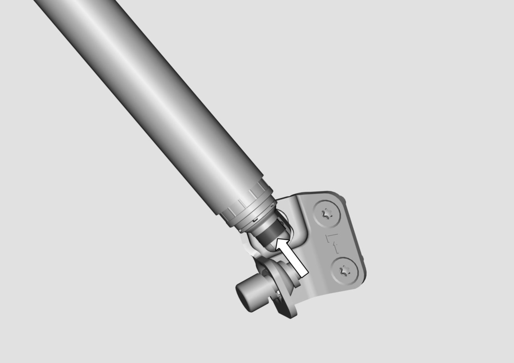
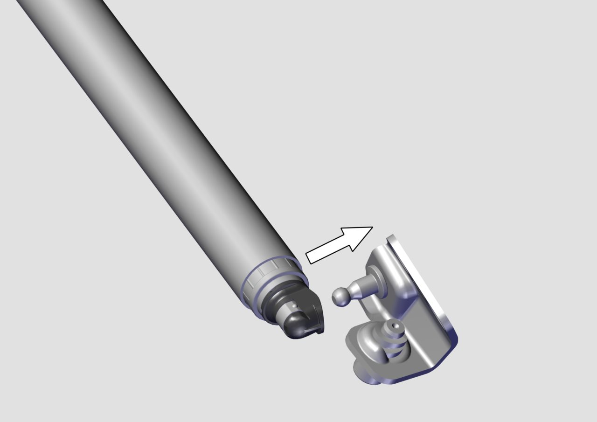

提示
这里介绍左侧背门驱动机构撑杆总成的拆卸和安装，右侧背门驱动机构撑杆总成的拆卸和安装大体可参照左侧。
如需拆卸背门驱动机构撑杆总成，背门必须有物体可靠支撑，否则单个背门驱动机构撑杆总成无法是背门保持打开。
拆卸
左侧为电动撑杆，右侧为辅助撑杆，拆卸左侧撑杆时，需要先拆卸顶盖内衬 参见 拆卸与安装顶盖内衬 拆卸与安装顶盖内衬 ，顶盖内衬拆卸后再拆卸撑杆线束接插件
在背门打开至全开并支撑的状态下，拆卸背门驱动机构撑杆总成时，需使用细一字螺丝刀工具，先将一字起头部按图示箭头方向插入背门驱动机构撑杆总成卡簧内，再用一字起将卡簧撬开一定角度，此时可以将背门驱动机构撑杆总成从车身上取下。

1.一般情况下，同一台车上的两根撑杆中只会有一根出现故障/失效，为避免误判，请采用排除法确定具体失的零件是其中的哪一根，然后再进行更换；
2.保养维护，请用压缩空气吹扫撑杆滑动套筒上的灰尘，如灰尘粘附在滑动套筒，请用干净抹布或工业擦拭纸除去灰尘，再用压缩空气吹扫干净；
3.车身钣金喷漆时，必须对背门驱动机构撑杆进行有效防护，避免油漆粘附在驱动机构撑杆上造成异响；如用美纹胶带进行防护时，喷漆后必须将美纹胶带从撑杆上去除，否则美纹胶带会进入驱动机构撑杆造成异响。
维修更换驱动机构撑杆总成时，应注意避免碰撞和刮擦驱动机构撑杆总成，避免割伤电撑杆线束。不得拆解驱动机构撑杆总成，否则可能引起高压弹簧伤人。
安装
装配驱动机构撑杆总成时，检查撑杆球头弹簧卡安装到位，然后将驱动机构撑杆总成球头对准球头销，轻轻拍动驱动机构撑杆总成卡入球头上，确保弹簧卡卡接到球头销缩颈处，完成装配装配驱动机构撑杆总成时，将驱动机构撑杆总成对准球头销，轻轻拍动驱动机构撑杆总成卡入球头上，完成装配。
左侧为电动撑杆，电撑杆安装完成后，需要先安装线束接插件，后安装顶盖内衬，参见 拆卸与安装顶盖内衬
